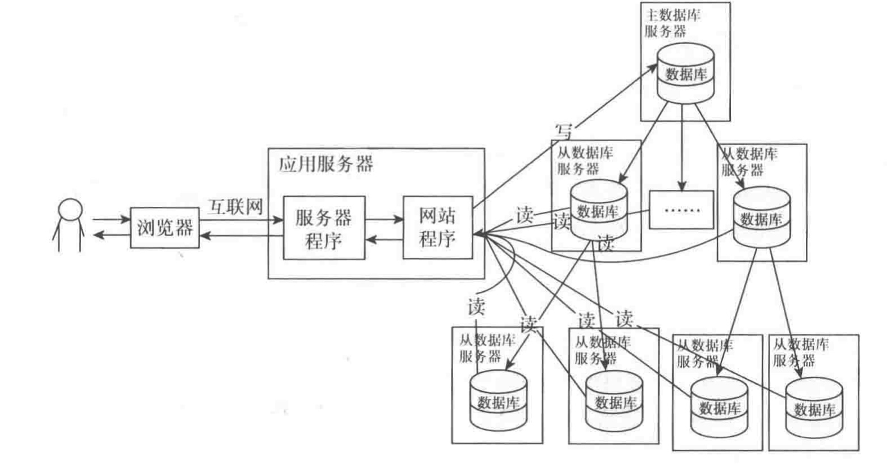
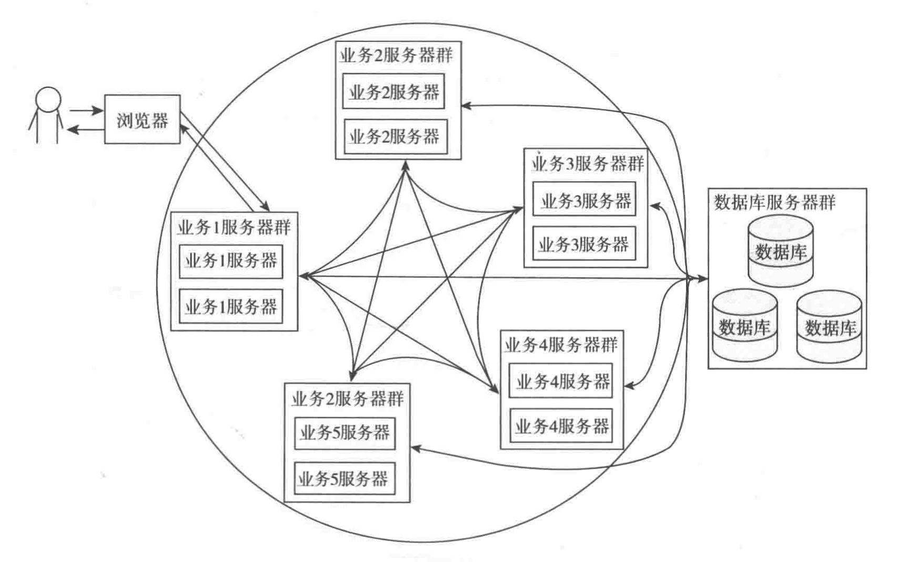
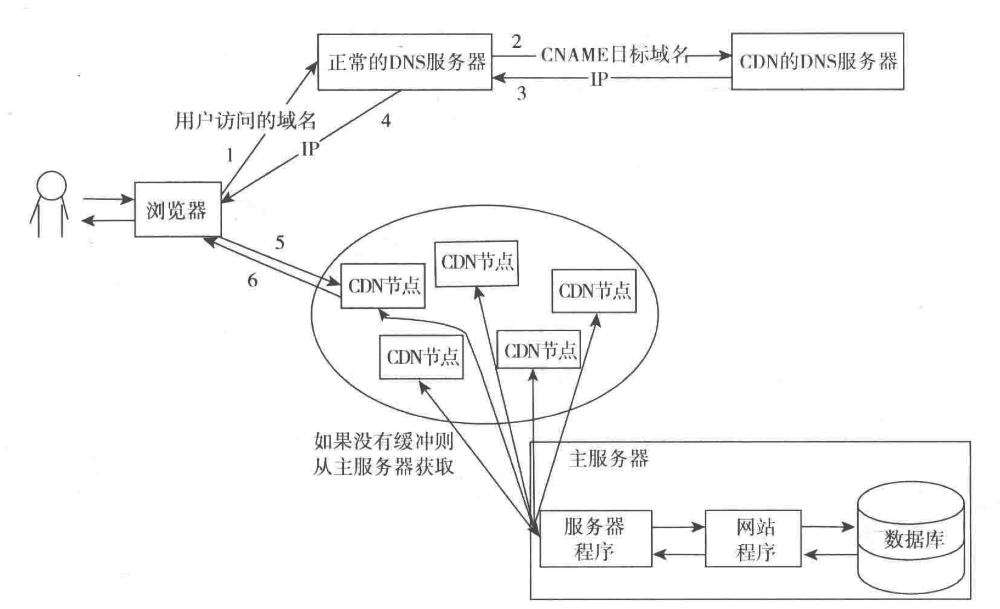

海量数据方案
缓存和页面静态化
缓存问题
适用于变动并不频繁的数据
缓存失效机制
一致性问题
缓存雪崩
缓存击穿
数据库优化
表优化
sql语句优化
索引优化
分库分表
热点数据分离
有这样一种情况，表中的数据量非常大，但是出于活跃状态的数据很少，此时将活跃的数据单独分离出来将会是一种行之有效的方案。
批量读取或者延迟修改
批量读取和延迟修改都是通过降低操作的次数来提高效率的手段
批量读取
比如数据库的 batch insert 操作，现在有 1W 条数据要插入数据库，数据在插入之前查询数据库中是否已经存在，如果这 1W 条数据都在插入之前查询数据库，将会产生 1W 此获取连接的操作，这样很明显是糟糕的。
如果首先一次查询完这 1W 的存在情况，然后再依据查询结果进行插入操作将节省大量的数据库连接资源，进而达到提高效率的目的。
延迟修改
延迟修改主要使用与高并发下的频繁修改场景，比如秒杀。
这种情况可以首先将需要修改的数据做缓存，接下来的每次修改的结果存入缓存中，程序定时将缓存的数据同步到数据库。
但是这种方案有一个风险：缓存一旦宕机，数据将会丢失，对于重要数据更是灾难一样的风险。
读写分离
读写分离示意图
高并发方案
集群和分布式
集群是每个节点都具有相同的功能，处理请求时调用到哪个集群节点结果都是一样的，主要起到分流的作用。
分布式是不同业务功能的服务放到不同的服务器中，这时完成一个请求肯能需要调用到多台服务器，每台服务器专门处理某个模块的业务代码（而不是各个模块的代码耦合在一个应用服务器中），提高单模块的处理能力。
集群
反向代理
正向代理与反向代理
CDN
CDN是一种特殊的页面缓存服务器集群，CDN 服务器是分布在全国各地的，当接受到用户的请求后会将请求分配到最适合的 CDN 服务器节点获取资源。
CDN 的请求方式比较特殊，他并不是使用普通的负载均衡服务器来分配的，而是专门的 CDN 域名解析服务器在解析域名的时候就分配好的，一般的做法是在 ISP(网络服务提供商) 哪里使用 CNAME 将域名解析到一个特定的域名，然后再将解析到的那个域名用专门的 CDN 服务器解析到响应的 CDN 节点。
CDN 结构图
访问CDN 的 DNS 服务器是因为 CNAME 记录的目标域名使用 NS 记录指向了 CDN 的 DNS 服务器，CDN 的每个节点可能也是一个集群